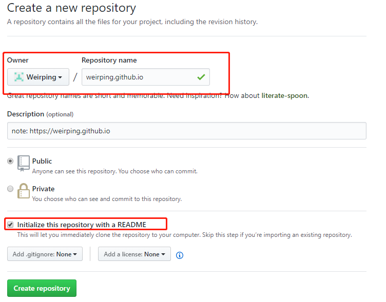

作为一个技术人员，平时肯定需要学习一些东西，多年以来我习惯将学的的东西记录在文件中保存。时间长了以后就出问题了：
- 文件查找困难。当我想回头看之前记录的东西时，由于文件较多，查找困难，最终还是去网上找。
- 无法添加tag
后来尝试使用博客园，发现博客的发布和管理相当不方便。
最后决定使用Hexo在github上写。由于我需要编写Latex公式，Hexo的配置还是消耗了一些时间的，为了防止以后搭建博客时的重复劳动，遂成此文。
本文记录个人的Hexo的配置过程(在windows上)，希望最终形成一个脚本，能够自动完成个人博客的配置工作。
前期准备
安装Git Bash
配置git：在新机器上生成一个ssh秘钥和公钥1
2
3ssh-keygen -t rsa -C "weirping@work-VM" ## -t 加密算法， -C comment 用于连接github
git config --global user.name 'weirping' ##
git config --global user.email "zhangweiping1988@gmail.com" ##安装NodeJs ，安装是勾选
Add to PATH选项使用淘宝 NPM 镜像
1
npm --registry https://registry.npm.taobao.org info underscore
blog初始化与配置
1 | npm install hexo -g # 安装hexo模块 |
修改站点信息1
2
3
4
5
6
7
8# Site
title: Weiping's notes
subtitle:
description:
keywords: NLP, ML
author: Weiping
language: zh-Hans
timezone:
修改url ：去掉url中年月日的显示
1 | permalink: blog/:title.html # :year/:month/:day/:title/ |
_post 目录下的文件夹：默认情况下，_post 目录下的文件夹是不会发布的。当我编写一个markdown文件的时候，如 a.md 。我会在同级目录下建一个 文件夹a，将markdown文件所需要的图片放到文件夹a中，在md文件中只需要使用 就能引用这个图片。
当我编写好一个md文件后，只需要将a.md和文件夹a 同时拷贝到_post 中，发布即可。为了做到这一点，需要：
1 | post_asset_folder: true # false |
NexT主题安装与配置
安装
1 | git clone https://github.com/theme-next/hexo-theme-next themes/next # install |
启用NexT主题：打开 站点的配置文件_config.yml， 找到 theme 字段，并将其值更改为 next
1 | theme: next |
NexT配置
选择 Scheme
1 | # --------------------------------------------------------------- |
设置头像
新建文件夹source/avatar 在其中放入头像文件 avatar.jpg
修改主题配置文件 _config.yml
1 | avatar: /avatar/avatar.jpg |
设置sidebar
1 | sidebar: |
设置我的github 和email
1 | social: |
页脚 (footer)
1 | footer: |
显示blog修改时间
1 | post_meta: |
摘要
home页面自动提取各blog的摘要
1 | auto_excerpt: |
设置 菜单
1 | hexo new page tags # 新建tags页面 |
在source\tags\index.md 中添加如下内容
1 | --- |
在source\categories\index.md 中添加如下内容
1 | --- |
修改主题配置文件 _config.yml
1 | menu: |
Latex公式支持
修改主题配置文件 _config.yml
1 | math: |
Mathjax和Markdown一起工作有个坑。
下划线_ 在Markdown里面是标记斜体字，而下划线_在Latex语法中是表示下标。\\ 在 Markdown中会被转义为\ ，而在Latex中\\ 表示多行公式的换行符。
Markdown优先于Mathjax，所以下划线会渲染成斜体字，导致一些MathJax公式不能正常显示。为了解决这个问题需要修改Hexo的渲染引擎 marked 的转义配置。位于: node_modules\marked\lib\marked.js 中替换escape 和em
1 | var inline = { |
发布到github
在 github 上创建 blog repo

配置blog
1 | deploy: |
部署脚本
根据以上内容我编写了一个自动化部署Hexo Blog 脚本，地址为：
1 | https://github.com/Weirping/hexo-install |